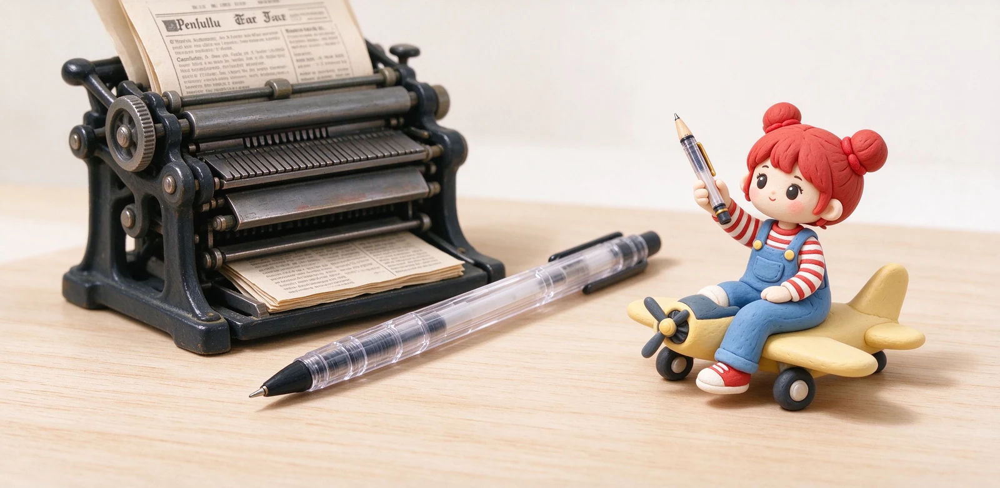
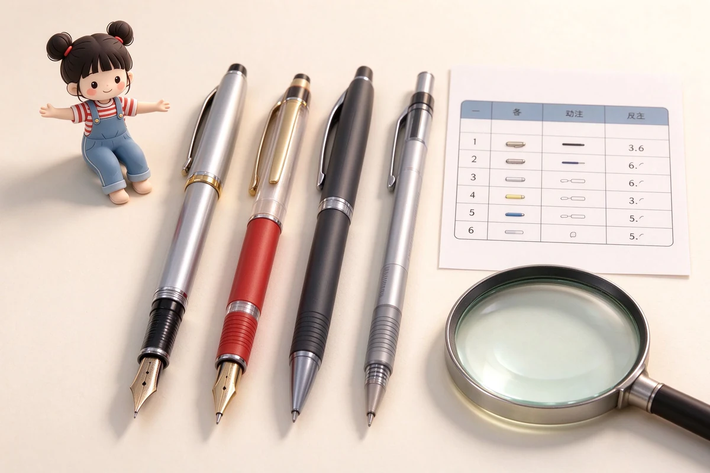

語意摘要：現代原子筆來自匈牙利記者 László Bíró 與弟弟 György，1938 年在匈牙利申請專利，靈感是報社印刷那種快乾、不糊的濃稠墨水。二戰時英國皇家空軍發現它在高空也不漏，1943 年訂購數萬支給飛行員。戰後 Milton Reynolds 在美仿造熱賣、Marcel Bich 買下專利並於 1950 年推出 Bic Cristal，把價格殺到平價，原子筆從此成為國民筆。
靈感來自報社：為什麼墨水要又濃又快乾
László Bíró 是匈牙利的報社記者。他注意到報紙印刷用的墨水乾得很快、寫上去完全不糊，跟鋼筆那種濕答答、容易弄髒手的墨水差太多。問題是這種墨水太稠，用一般鋼筆尖根本流不出來。
他跟當工程師的弟弟 György 一起想出解法：在筆尖裝一顆小小的滾珠，筆管裡裝稠的油性墨水，滾珠轉動時把墨水均勻帶到紙上。1938 年，他們在匈牙利申請了這個專利——這就是現代原子筆的原型。
其實更早 1888 年美國人 John Loud 就申請過『滾珠筆』專利，但那種筆是用來在皮革上畫記號的，在紙上寫並不好用，所以沒有普及。Bíró 兄弟是第一個把它變成能在紙上順暢書寫的人。
關鍵場景：高空飛行，鋼筆會漏
Bíró 後來為了逃離納粹，從匈牙利輾轉到阿根廷。真正讓原子筆翻身的，是一個意想不到的用戶——空軍。在高空，氣壓變低，鋼筆筆尖的墨水會不受控制地滲出來（這也是為什麼今天搭飛機帶鋼筆要筆尖朝上）。
而原子筆靠的是滾珠轉動帶墨，不靠大氣壓力，所以在高空照樣能寫、也不漏。傳聞英國皇家空軍在 1943 年訂購了約三萬支這種筆給飛行員用。這個『飛行筆』的身份，讓原子筆從實驗品變成軍方認可的可靠工具。

戰後熱賣與專利戰：Reynolds 與 Bic
二戰結束後，芝加哥商人 Milton Reynolds 在阿根廷看到 Bíró 的筆，回到美國直接逆向仿造，在 1945 年推出『Reynolds Rocket』，繞過了正規授權。當時原子筆在美國被當成新奇玩意，一支要價好幾美元，上市時大排長龍，掀起一陣旋風。
真正把價格打下來的，是法國人 Marcel Bich。他買下 Bíró 的專利，找瑞士製錶等級的精度來對準滾珠與筆管的間距、並調出理想的墨水配方。1950 年 12 月，Bich 以自己的品牌 Bic 推出了 Bic Cristal——一支約 14 公分、六角透明筆身、黃銅筆尖的便宜原子筆。
透明筆身讓你隨時看到墨水還剩多少，六角造型讓它不會在桌上亂滾。因為夠便宜、夠可靠，Cristal 賣到難以估計的數量，原子筆從此變成『用完就丟、人人買得起』的國民筆。
為什麼是它打敗了鋼筆
原子筆普及，靠的不是寫起來比鋼筆好——論手感與寫字的愉悅，鋼筆到今天仍勝出——而是『方便、便宜、不漏、不用保養』。它不需要洗筆、不怕放、不怕氣壓變化，幾乎是為現代忙碌生活量身打造。
於是形成了今天的分佈：原子筆佔據辦公室、考試、外出、隨手記事這些『講求可靠』的場景；鋼筆則退到講究手感、收藏與興趣的小宇宙。兩者不是誰取代誰，而是各占一個生態位。
幾個你可能不知道的冷知識
常見問題 FAQ
原子筆是誰發明的？
為什麼跟空軍有關？
Bic Cristal 是什麼？
為什麼台灣叫原子筆？
原子筆為什麼能打敗鋼筆？
資料來源與核實依據
- The Royal Air Force helps the biros to fame（1943 訂購 3 萬支、Reynolds Rocket）（Deutsches Patent- und Markenamt（DPMA））
- Why the Ballpoint Pen Changed How the World Writes（1944 英國空軍授權、高空漏墨）（Scriveiner）
- 75 years of BIC Cristal（Marcel Bich 買下專利、1950 年 12 月上市）（BIC）
- Who Invented the Ballpoint Pen? Biro, Loud, and the Patent Fight（1888 Loud、1938 Bíró）（InventorSpot）
相關文章推薦

鋼筆是誰發明的？從羽毛筆到活塞上墨的鋼筆演化史
現代鋼筆的關鍵不是把筆尖做成金屬，而是 1884 年一個保險業務員想通的『讓墨水自己穩定流出』——他因為一支漏水的筆丟了大客戶，才發明了三道溝的毛細供墨。

鋼筆、原子筆、中性筆、自動鉛筆差在哪？四種筆完整比較表
選筆前先懂它的墨水：鋼筆靠毛細、原子筆靠油壓筆珠、中性筆是膠狀墨、自動鉛筆是石墨，原理不同，手感與適合場合就完全不同。

原子筆為何會漏油？原子筆選購、油性墨水與長壽命關鍵
原子筆用的是油性墨水，靠前端小筆珠在紙上滾動把油帶出來：好處是乾得快、不怕壓、放三年還能寫；缺點就是你最討厭的——會在口袋滲出一灘油。